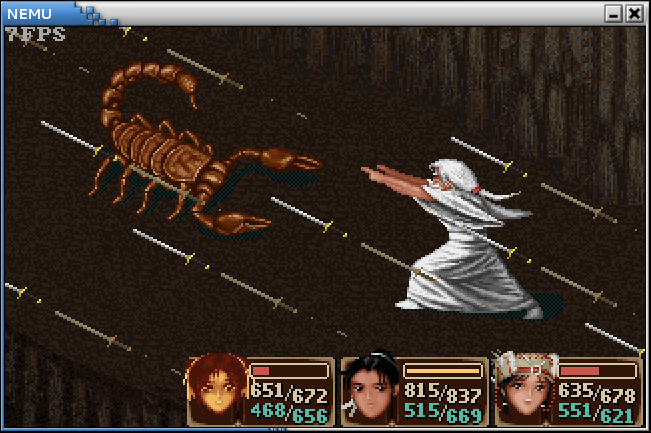

一切皆文件
我们已经提供了完整的文件系统, 用户程序已经可以读写普通的文件了. 想想我们在AM上运行的打字游戏, 读入按键/查询时钟/更新屏幕其实也是用户程序的合理需求, 操作系统也需要提供支持. 一种最直接的方式, 就是为每个功能单独提供一个系统调用, 用户程序通过这些系统调用, 就可以直接使用相应的功能了. 然而这种做法却存在不少问题:
- 首先, 设备的类型五花八门, 其功能更是数不胜数, 要为它们分别实现系统调用来给用户程序提供接口, 本身就已经缺乏可行性了;
- 此外, 由于设备的功能差别较大, 若提供的接口不能统一, 程序之间的交互就会变得困难.
我们在上一小节中提到, 文件的本质就是字节序列. 事实上, 计算机系统中到处都是字节序列(如果只是无序的字节集合, 计算机要如何处理?), 我们可以轻松地举出很多例子:
- 内存是以字节编址的, 天然就是一个字节序列, 因而我们之前使用的ramdisk作为字节序列也更加显而易见了
- 管道(shell命令中的
|)是一种先进先出的字节序列, 本质上它是内存中的一个队列缓冲区 - 磁盘也可以看成一个字节序列: 我们可以为磁盘上的每一个字节进行编号, 例如第x柱面第y磁头第z扇区中的第n字节, 把磁盘上的所有字节按照编号的大小进行排列, 便得到了一个字节序列
- socket(网络套接字)也是一种字节序列, 它有一个缓冲区, 负责存放接收到的网络数据包, 上层应用将socket中的内容看做是字节序列, 并通过一些特殊的文件操作来处理它们
- 操作系统的一些信息可以以字节序列的方式暴露给用户, 例如CPU的配置信息
- 操作系统提供的一些特殊的功能, 如随机数生成器, 也可以看成一个无穷长的字节序列
- 甚至一些非存储类型的硬件也可以看成是字节序列: 我们在键盘上按顺序敲入按键的编码形成了一个字节序列, 显示器上每一个像素的内容按照其顺序也可以看做是字节序列...
既然文件就是字节序列, 那很自然地, 上面这些五花八门的字节序列应该都可以看成文件.
Unix就是这样做的, 因此有"一切皆文件"(Everything is a file)的说法.
这种做法最直观的好处就是为不同的事物提供了统一的接口:
我们可以使用文件的接口来操作计算机上的一切, 而不必对它们进行详细的区分: 例如
nanos-lite/Makefile中通过管道把各个shell工具的输入输出连起来, 生成文件记录表
wc -c $(FSIMG_FILES) | grep -v 'total$$' | sed -e 's+ $(FSIMG_PATH)+ +' |
awk -v sum=0 '{print "\x7b\x22" $$2 "\x22\x2c " $$1 "\x2c " sum "\x7d\x2c";sum += $$1}' > src/files.h
以十六进制的方式查看磁盘上的内容
head -c 512 /dev/sda | hd
查看CPU的配置信息
cat /proc/cpuinfo | vim -
而
#include "/dev/urandom"
则会将urandom中的内容包含到源文件中: 由于urandom是一个长度无穷的字节序列, 提交一个包含上述内容的程序源文件将会令一些检测功能不强的Online Judge平台直接崩溃.
"一切皆文件"的抽象使得我们可以通过标准工具很容易完成一些在Windows下不易完成的工作, 这其实体现了Unix哲学的部分内容: 每个程序采用文本文件作为输入输出, 这样可以使程序之间易于合作. GNU/Linux继承自Unix, 也自然继承了这种优秀的特性. 为了向用户程序提供统一的抽象, Nanos-lite也尝试将IOE抽象成文件.
首先当然是来看输出设备.
串口已经被抽象成stdout和stderr了, 我们无需担心.
至于VGA, 程序为了更新屏幕, 只需要将像素信息写入VGA的显存即可.
于是, Nanos-lite需要做的, 便是把显存抽象成文件.
显存本身也是一段存储空间, 它以行优先的方式存储了将要在屏幕上显示的像素.
Nanos-lite和Navy-apps约定, 把显存抽象成文件/dev/fb(fb为frame buffer之意),
它需要支持写操作和lseek, 以便于用户程序把像素更新到屏幕的指定位置上.
除此之外, 用户程序还需要获得屏幕大小的信息, 然后才能决定如何更好地显示像素内容.
Nanos-lite和Navy-apps约定, 屏幕大小的信息通过/proc/dispinfo文件来获得,
它需要支持读操作.
/proc/dispinfo内容的一个例子如下:
WIDTH:640
HEIGHT:480
需要注意的是, /dev/fb和/proc/dispinfo都是特殊的文件,
文件记录表中有它们的文件名, 但它们的实体并不在ramdisk中.
因此, 我们需要在fs_read()和fs_write()的实现中对它们进行"重定向", 以fs_write()为例:
ssize_t fs_write(int fd const void *buf, size_t len) {
// ...
switch (fd) {
case FD_STDOUT:
case FD_STDERR:
// call _putc()
break;
case FD_FB:
// write to frame buffer
break;
default:
// write to ramdisk
break;
}
你需要在Nanos-lite中
- 在
init_fs()(在nanos-lite/src/fs.c中定义)中对文件记录表中/dev/fb的大小进行初始化, 你需要使用IOE定义的API来获取屏幕的大小. - 实现
fb_write()(在nanos-lite/src/device.c中定义), 用于把buf中的len字节写到屏幕上offset处. 你需要先从offset计算出屏幕上的坐标, 然后调用IOE的_draw_rect()接口. - 在
init_device()(在nanos-lite/src/device.c中定义)中将/proc/dispinfo的内容提前写入到字符串dispinfo中. 实际的屏幕大小信息已经记录在AM的IOE接口中, 你需要在Nanos-lite中获取它们. - 实现
dispinfo_read()(在nanos-lite/src/device.c中定义), 用于把字符串dispinfo中offset开始的len字节写到buf中. - 在文件系统中添加对
/dev/fb和/proc/dispinfo这两个特殊文件的支持.
让Nanos-lite加载/bin/bmptest, 如果实现正确, 你将会看到屏幕上显示ProjectN的Logo.
最后我们来看输入设备.
输入设备有键盘和时钟, 我们需要把它们的输入包装成事件.
一种简单的方式是把事件以文本的形式表现出来, 我们定义以下事件, 一个事件以换行符\n结束:
t 1234: 返回系统启动后的时间, 单位为毫秒;kd RETURN/ku A: 按下/松开按键, 按键名称全部大写, 使用AM中定义的按键名
我们采用文本形式来描述事件有两个好处,
首先文本显然是一种字节序列, 这使得事件很容易抽象成文件;
此外文本方式使得用户程序可以容易可读地解析事件的内容.
Nanos-lite和Navy-apps约定, 上述事件抽象成文件/dev/events,
它需要支持读操作, 用户程序可以从中一次读出一个输入事件.
需要注意的是, 由于时钟事件可以任意时刻进行读取,
我们需要优先处理按键事件, 当不存在按键事件的时候, 才返回时钟事件,
否则用户程序将永远无法读到按键事件.
nexus-am/libs/klib/build/klib-x86-nemu.a中的sprintf()返回结果字符串长度时额外计算了末尾的\0,
与man sprintf中的说明不符.
可以使用strlen()来计算结果字符串的长度来避免这个问题.
你需要在Nanos-lite中
- 实现
events_read()(在nanos-lite/src/device.c中定义), 把事件写入到buf中, 最长写入len字节, 然后返回写入的实际长度. 其中按键名已经在字符串数组names中定义好了. 你需要借助IOE的API来获得设备的输入. - 在文件系统中添加对
/dev/events的支持.
让Nanos-lite加载/bin/events, 如果实现正确,
你会看到程序输出时间事件的信息, 敲击按键时会输出按键事件的信息.
运行仙剑奇侠传
原版的仙剑奇侠传是针对Windows平台开发的,
因此它并不能在GNU/Linux中运行(你知道为什么吗?), 也不能在NEMU中运行.
网友weimingzhi开发了一款基于SDL库, 跨平台的仙剑奇侠传, 工程叫SDLPAL.
你可以通过git clone命令把SDLPAL克隆到本地,
然后把仙剑奇侠传的数据文件(我们已经把数据文件上传到提交网站上)放在工程目录下,
执行make编译SDLPAL, 编译成功后就可以玩了.
更多的信息请参考SDLPAL工程中的README说明.
我们的框架代码已经把SDLPAL移植到Navy-apps中了. 移植的主要工作就是把应用层之下提供给仙剑奇侠传的所有API重新实现一遍, 因为这些API大多都依赖于操作系统提供的运行时环境, 我们需要根据Navy-apps提供的运行时环境重写它们. 主要包括以下三部分内容:
- C标准库
- 浮点数
- SDL库
Navy-apps中的newlib已经提供了C标准库的功能, 我们无需额外移植.
关于浮点数的移植工作, 我们会在PA5中再来讨论, 目前先忽略它.
为了移植SDL库相关的代码, Navy-apps把时钟, 键盘, 显示的功能封装成NDL(NJU DirectMedia Layer)多媒体库,
其中封装了我们之前实现的/dev/fb和/dev/events的读写.
为了用NDL的API来替代原来SDL的相应功能, 移植工作需要对SDLPAL进行了少量修改,
包括去掉了声音, 修改了和按键相关的处理,
把我们关心的与NDL相关的功能整理到hal/hal.c中,
一些我们不必关心的实现则整理到unused/目录下.
框架代码已经把这些移植工作都做好了, 目前你不需要编写额外的代码来进行移植.
终于到了激动人心的时刻了!
我们已经通过文件的抽象向仙剑奇侠传提供了所有它需要的功能了.
从提交网站上下载仙剑奇侠传的数据文件, 并放到navy-apps/fsimg/share/games/pal/目录下,
更新ramdisk之后, 在Nanos-lite中加载并运行/bin/pal.
在我们提供的数据文件中包含一些游戏存档, 可以读取迷宫中的存档, 与怪物进行战斗. 但战斗需要进行一些浮点数相关的计算, 而NEMU目前没有实现浮点数, 因而不能成功进行战斗. 我们会在PA5中再来解决浮点数的问题, 目前我们先暂时不触发战斗, 可以先通过"新的故事"进行游戏.

网上流传着一些关于仙剑奇侠传的秘技, 其中的若干条秘技如下:
- 很多人到了云姨那里都会去拿三次钱, 其实拿一次就会让钱箱爆满! 你拿了一次钱就去买剑把钱用到只剩一千多, 然后去道士那里, 先不要上楼, 去掌柜那里买酒, 多买几次你就会发现钱用不完了.
- 不断使用乾坤一掷(钱必须多于五千文)用到财产低于五千文, 钱会暴增到上限, 如此一来就有用不完的钱了
- 当李逍遥等级到达99级时, 用5~10只金蚕王, 经验点又跑出来了, 而且升级所需经验会变回初期5~10级内的经验值, 然后去打敌人或用金蚕王升级, 可以学到灵儿的法术(从五气朝元开始); 升到199级后再用5~10只金蚕王, 经验点再跑出来, 所需升级经验也是很低, 可以学到月如的法术(从一阳指开始); 到299级后再用10~30只金蚕王, 经验点出来后继续升级, 可学到阿奴的法术(从万蚁蚀象开始).
假设这些上述这些秘技并非游戏制作人员的本意, 请尝试解释这些秘技为什么能生效.
文件读写的具体过程 仙剑奇侠传中有以下行为:
- 在
navy-apps/apps/pal/src/global/global.c的PAL_LoadGame()中通过fread()读取游戏存档 - 在
navy-apps/apps/pal/src/hal/hal.c的redraw()中通过NDL_DrawRect()更新屏幕
请结合代码解释仙剑奇侠传, 库函数, libos, Nanos-lite, AM, NEMU是如何相互协助, 来分别完成游戏存档的读取和屏幕的更新.
PA3到此结束.
请你编写好实验报告(不要忘记在实验报告中回答必答题),
然后把命名为学号.pdf的实验报告文件放置在工程目录下,
执行make submit对工程进行打包, 最后将压缩包提交到指定网站.